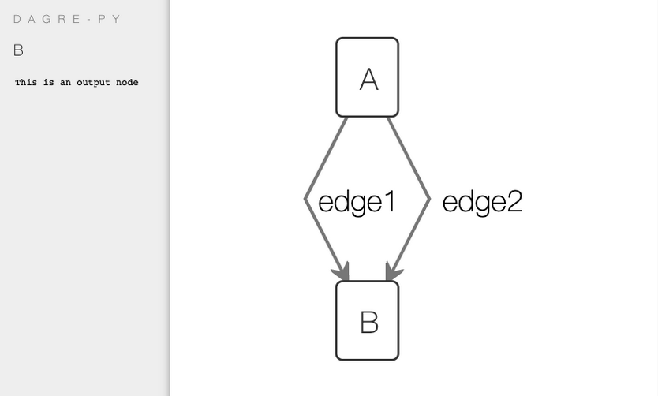
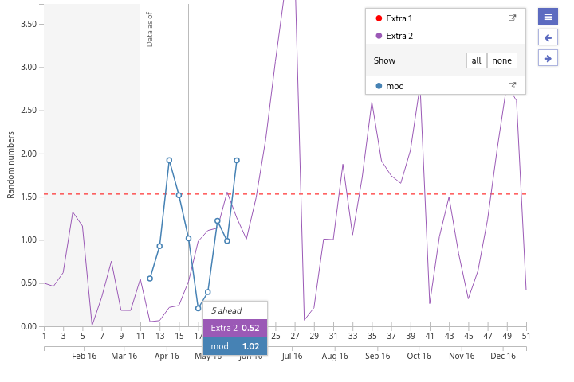
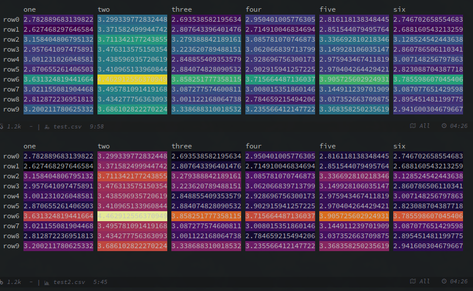
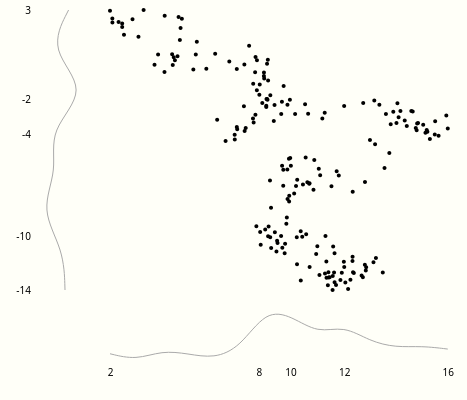

I am not a visualization professional but have always enjoyed opportunities to work on them. These opportunities have mostly come as distractions from some main line of work that I have been doing so I have not been able to spend as much time as I could.
This page lists a few tools around visualization that I have built. Most of
these are old items and kept here for completeness and archival purpose. There
are a few projects spread around my writings if you follow the tag viz on my
blog and on the journal.


2019
dagre-py
Thin python wrapper around dagre-d3 for building interactive dags with tooltips and a
few other niceties.



